-
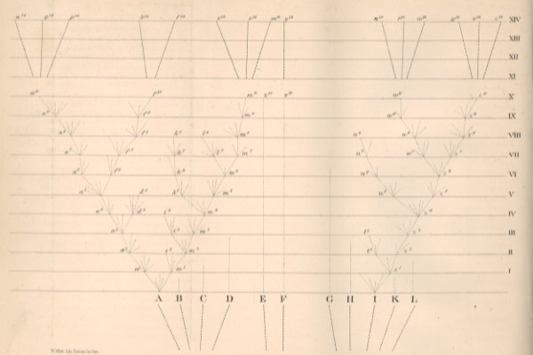
Darwin and the Watchmaker
a watch in the dirt needs a watchmaker. an eye, darwin shows, does not.
-
The Meditations of Marcus Aurelius, Side by Side
the private notebook a roman emperor wrote to himself, never meant for anyone to read, mostly about staying humble and remembering he would soon die.
-
Man's Search for Meaning
a psychiatrist in the nazi camps on the one thing that kept men alive: a reason.
-
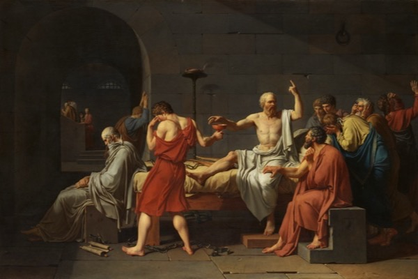
Plato's Cave and the Death of Socrates
executed for asking too many questions: the examined life, the cave, and the calm death of socrates.
-
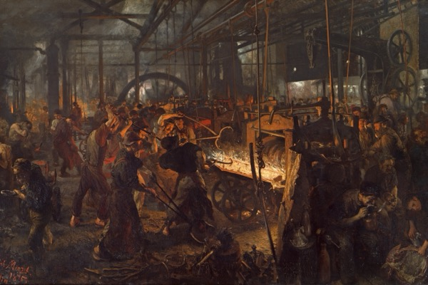
Marx and the Gravediggers
capitalism's sharpest critic, and the catastrophe in his name, walked one move at a time.
-
The Art of War, Side by Side
the most famous war book says the best way to win is to never fight.
-
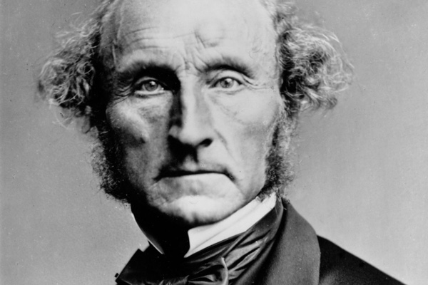
On Liberty, and the Only Reason to Stop You
john stuart mill's 1859 case for leaving people alone, unless they harm someone else.
-
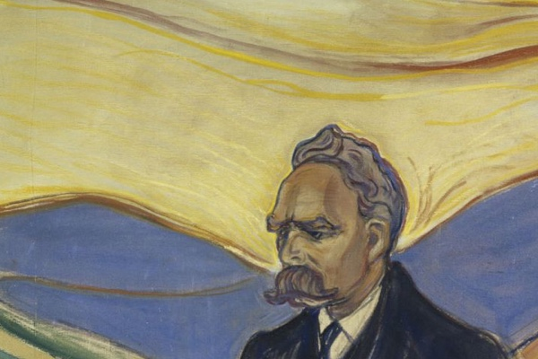
Nietzsche and the Case Against Morality
the series' dissenter: god is dead, and your humility is a weapon the weak invented.
-
The Social Contract, Side by Side
why should anyone obey the state? hobbes, locke, and rousseau, set against each other on the same five questions.
-
Aristotle and the Good Life
everyone wants to be happy and mostly chases the wrong things. here is aristotle's answer.
-
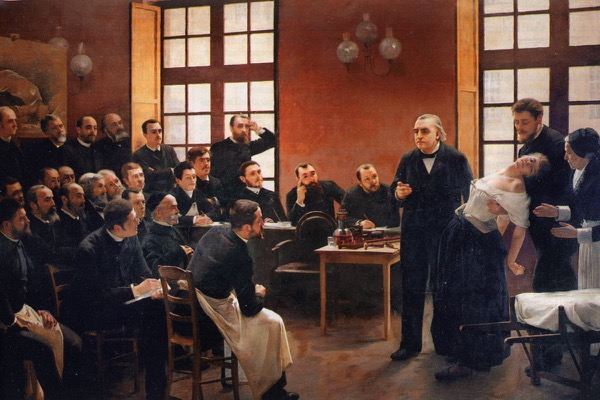
The Book With No Blood Test
a field guide to the dsm, psychiatry's catalog of about three hundred disorders, not one of which can be proven by a test. a tour of the conditions you might find yourself in, the wild ones medicine can prove cold instead (huntington's, narcolepsy, the brain on fire), where addiction sits, and how sure you should be that a label is you.
-
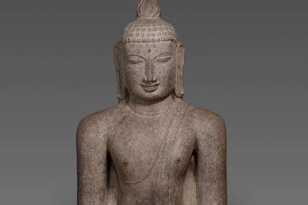
Meditation, Mapped
the truth about every kind of meditation, and how to actually do each one.
-
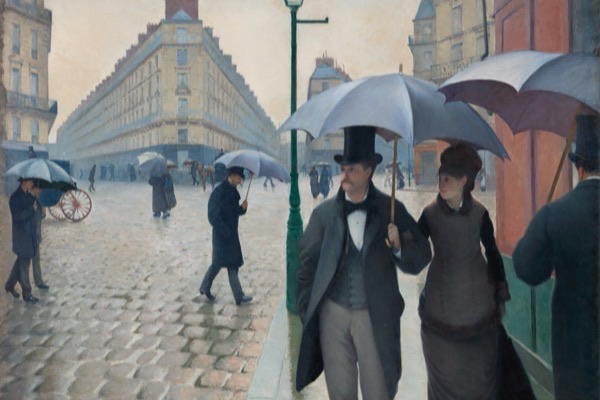
Do You Get Used to Everything?
you adapt almost completely to your senses, partly and on a schedule to your feelings, and unreliably to your life. a sourced field guide to habituation: what fades, what never does (commuting, grief, a job you can lose), and the one move you actually get, which is choosing what to get used to.
-
The New Testament, Side by Side
sixteen keystone passages in the original greek, stacked against nine english translations from william tyndale (burned at the stake for it) to david bentley hart, with a plain breakdown of where they split: logos, agape, virgin or young woman, faith versus works.
-
The Analects of Confucius, Side by Side
all twenty books of the analects in the original chinese, stacked against the great english translations from legge's victorian version to today's scholars, with a breakdown of where they split on the words with no english: ren, junzi, li, de, tian.
-
The Hebrew Bible, Side by Side
the tanakh, the jewish bible, read the way judaism reads it: through the argument and never alone. seventeen keystone passages in the pointed hebrew, stacked against seven english translations from the 1917 jps to robert alter, with a breakdown of where they split.
-
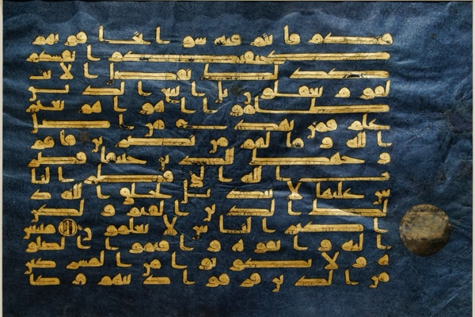
The Quran, Side by Side
to a muslim the quran is the arabic itself, the literal speech of god, and cannot be translated, so every english version is only an interpretation of the meaning. fourteen keystone passages in the arabic, stacked against seven translations from george sale in 1734 to a saudi committee in 1997, with a breakdown of where they split.
-
The Bhagavad Gita, Side by Side
a warrior freezes on the edge of a battle that will kill his own family, and his charioteer, who turns out to be god, talks him through it. all 700 verses in the sanskrit, stacked against the english translations, including the line oppenheimer remembered at the first atomic test.
-
Nagarjuna and the Emptiness of Everything
the founding text of madhyamaka, the deepest current in buddhist philosophy, walked one move at a time. nagarjuna's argument that nothing exists on its own, including you, and that this emptiness is not nothingness but the best news a person could hear, with the keystone verses stacked across six translators.
-
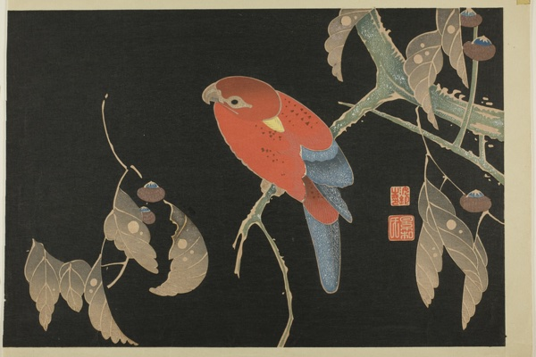
The Zhuangzi, the Book That Laughs
a guided walk through the second great taoist classic. nine of its wildest, funniest stories in plain language: the fish that becomes a world-sized bird, the butterfly dream, and zhuangzi drumming on a pot at his wife's funeral, with the compressed lines stacked across seven translators.
-
The Dhammapada, Side by Side
all 423 verses in the original pali, stacked against seven english translations spanning 140 years, from a victorian sanskritist to the contemporary monks, with a breakdown of the keystone verses and where they split.
-
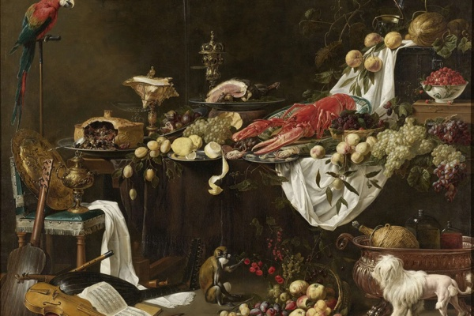
What You're Supposed to Eat
the third part of fitness, after muscle and the heart: what you eat. weight is just energy, health is just food, and every famous diet ties when you actually test it. sourced and illustrated, with six charts and two tools.
-
Still Moving
the two thirds of fitness lifting leaves out: cardio and stretching. how fit your heart is predicts how long you live more than almost anything, and most stretching is wasted motion. sourced and illustrated, with eight charts and two tools.
-
The Beginning of Infinity, Mapped
david deutsch's five-hundred-page case for optimism, distilled to the few ideas that carry it and drawn as one argument you can click through. a good explanation is one that is hard to vary, and from that test he gets knowledge with no limit and people as the most significant things in the universe.
-
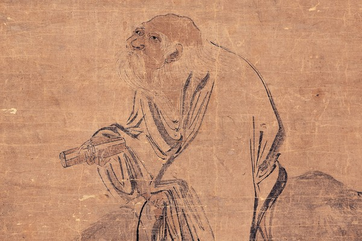
The Tao Te Ching, Side by Side
every chapter of the tao te ching in the original chinese, stacked against two dozen complete english translations and a hundred more in fragments, with a chapter-by-chapter breakdown of where they split.
-
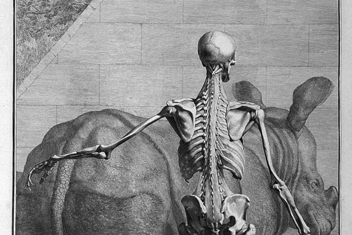
The Far Side of the Body
a field guide to the human body at the ends of its range, from agony and ecstasy to strange sleep and real superpowers. the same gene that means a life on fire, turned the other way, means a life with no pain at all.
-
How Long Can You Live?
the hard wall at 120 is unproven, the oldest-age records are riddled with missing paperwork and pension fraud, and the thing that actually adds years is the one nobody calls a hack. sourced and illustrated, with four charts.
-
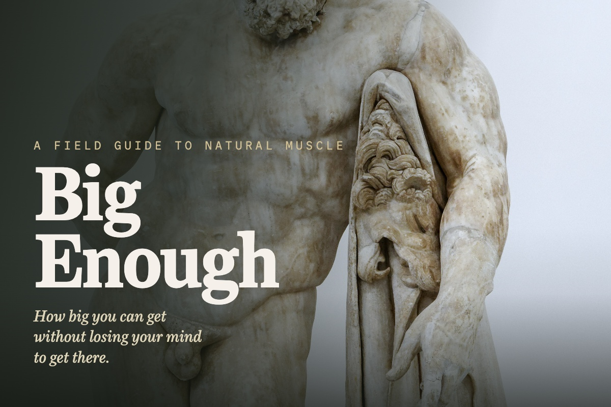
Big Enough
building muscle the natural way, on one supplement, real food, and sunlight, and knowing where to stop. the last 10% can cost twice the work, for muscle almost no one will notice.
-
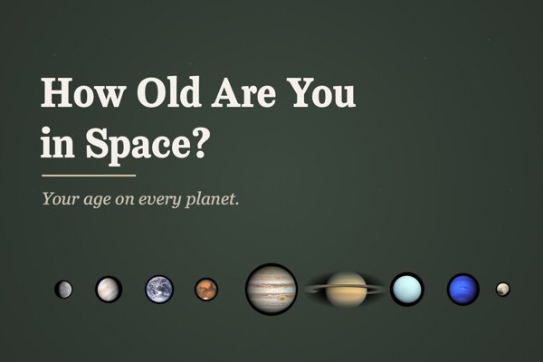
How Old Are You in Space?
enter your birthday and see your age on every planet, counted in each world's own years, with a countdown to your next birthday on each.
-
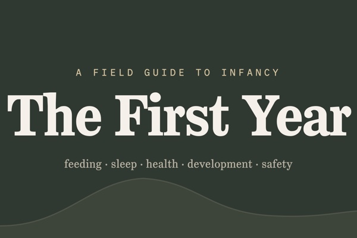
The First Year
a calm, exhaustively sourced field guide to a baby's first year: feeding, sleep, health, development, safety, and the parent. every claim cited, every chart on real data, and the places the experts disagree shown honestly.
-
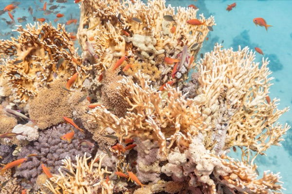
The Living Ocean
a mostly wordless dive through the ocean in three dozen high-resolution photographs, from tide pools and coral reefs to the deep sea, hydrothermal vents, and creatures named only last year.
-
The Brain Behind the Warehouse
behind every "your order has shipped" is a building you have probably never seen and a piece of software that knows where every item inside it is. how that software runs the warehouse and the factory beside it, from the dock door to the assembly line.
-
All In
the work that makes people valuable changed; the way we manage them mostly did not. a field guide to managing professionals, and to getting them all in.
-
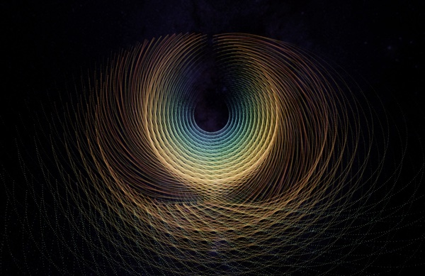
Obi Juan Algorithm
a million points of light you fly through in 3D, some deep structures from math, some algorithms you set running and watch work, all computed live.
-
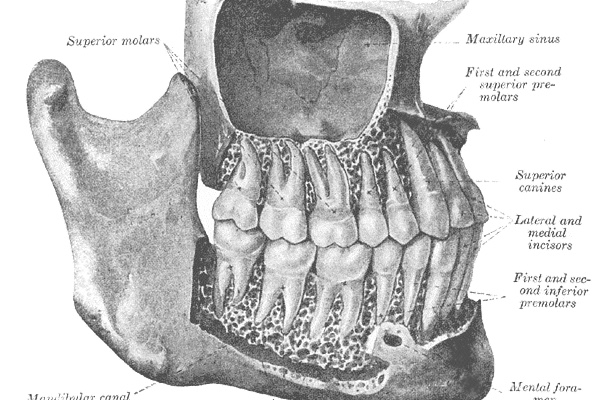
The Optional Body
an interactive descent through the parts of the body you can live without, from a spare foot bone to a heart on a machine.
-
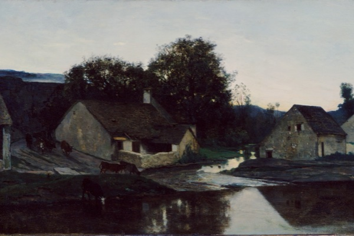
The Old Masters
a small private gallery. Storms and saints, harvest fields and harbour scenes.
-
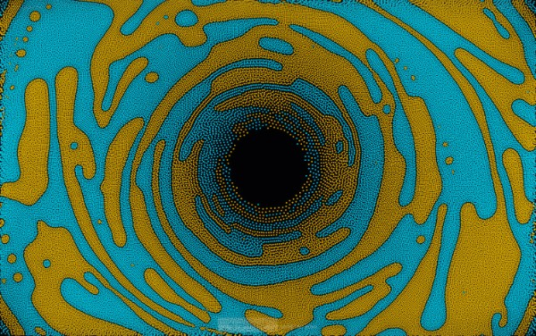
The Ghost in the Swarm
100,000 particles obey three lines of math on the GPU, while an invisible field steers the swarm through sacred geometry.
-
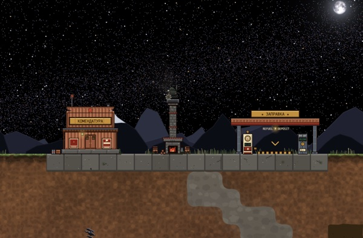
Sluice
my own 2D mining game. This free v15.89 build is the last public version; development is now private, coming to Steam, Summer 2027.
-
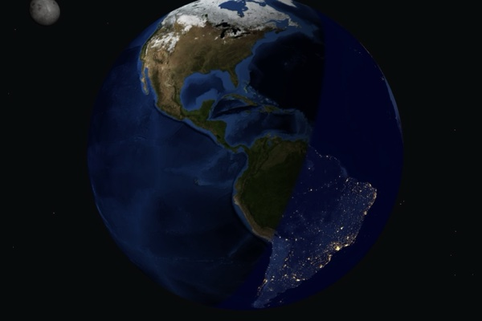
Daylight Globe
a small WebGL globe for the day/night line, daylight hours, and sunrise/set.
-
Rendering Particles Without a Canvas
three physics demos with no canvas, no WebGL, no SVG. The whole renderer is one CSS property on a 1px div.